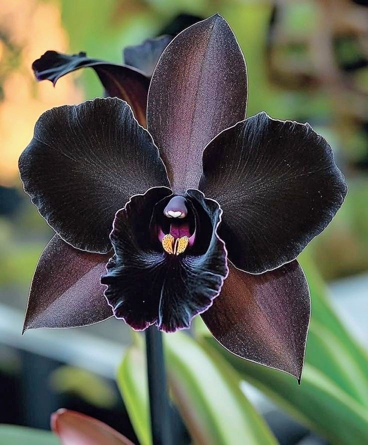
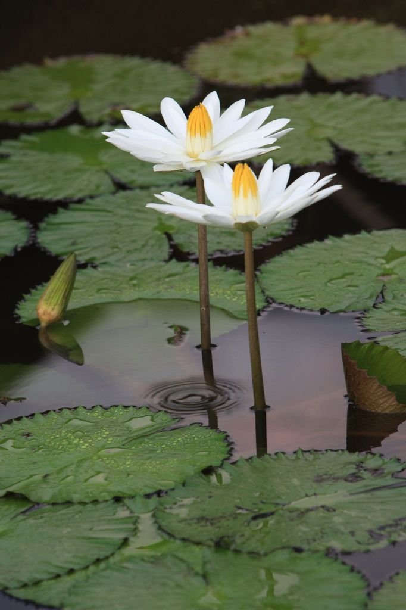

Flora Khas Indonesia
Rafflesia Arnoldii

Rafflesia arnoldii adalah bunga terbesar di dunia yang ditemukan di hutan Sumatra dan Kalimantan Rafflesia arnoldii meliputi ukurannya yang raksasa (diameter >1 meter, berat ~10 kg), tidak berdaun/batang/akar sejati (parasit obligat pada inang Tetrastigma), berwarna merah bata berbintik putih, berbau busuk seperti daging busuk untuk menarik serangga penyerbuk, dan hanya mekar 5-7 hari. Ia adalah bunga individu terbesar di dunia, salah satu puspa langka nasional Indonesia, dan endemik hutan hujan Sumatera dan Kalimantan. .
Anggrek Hitam

Anggrek hitam adalah jenis anggrek yang langka dan endemik di Indonesia, terkenal dengan warna gelapnya, Anggrek Hitam (Coelogyne pandurata) adalah anggrek epifit endemik Kalimantan dengan ciri khas labellum (lidah) hitam keunguan berbulu kontras dengan kelopak hijau kekuningan, beraroma harum khas madu/kayu manis, tumbuh bergerombol membentuk umbi semu, daun lonjong memanjang, dan mekar di musim kemarau (Maret-Juni). Ia membutuhkan kelembaban tinggi (60-85%), cahaya tidak langsung, dan tumbuh optimal di dataran rendah-menengah (100-1500 mdpl), menjadikannya simbol flora Kaltim dan maskot budaya Papua.
teratai

Teratai adalah salah satu jenis bunga yg Hidup di Air dan memiliki Bentuk Rupa yang Indah, Bunga teratai (genus Nelumbo atau Nymphaea) adalah tanaman air dengan ciri khas daun bulat lebar mengapung di air, tangkai panjang berongga dari akar di dasar air, serta bunga berlapis kelopak warna-warni (putih, merah muda, ungu, kuning) yang mekar di atas air, menonjolkan keunikan seperti efek superhidrofobik (daun selalu bersih) dan aroma harum, menjadikannya simbol spiritualitas, kesucian, dan keindahan di berbagai budaya.